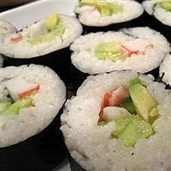

Home
Sushi

Smoked Salmon Sushi Roll
Ingredients
- 2 cups Japanese sushi rice
- 6 tablespoons rice win vinegar
- 6 sheets nori
- 1 avocado
- 1 cucumber
- 8 ounches smoked salmon
- 2 tablespoons wasabi paste
- Soak rice for 4 hours. Drain rice and cook in a rice cooker with 2 cups of water. Rice must be slightly dry as vinegar will be added later.
- Immediately after rice is cooked, mix in 6 tablespoons rice vinegar to the hot rice. Spread rice on a plate until completely cool.
- Place 1 sheet of seaweed on bamboo mat, press a thin layer of cool rice on the seaweed. Leave at least 1/2 inch top and bottom edge of the seaweed uncovered.
This is for easier sealing later. Dot some wasabi on the rice. Arrange cucumber, avocado and smoked salmon to the rice. Position them about 1 inch
away from the bottom edge of the seaweed.
- Slightly wet the top edge of the seaweed. Roll from bottom to the top edge with the help of the bamboo mat tightly. Cut roll into 8 equal pieces and serve. Repeat for other rolls.